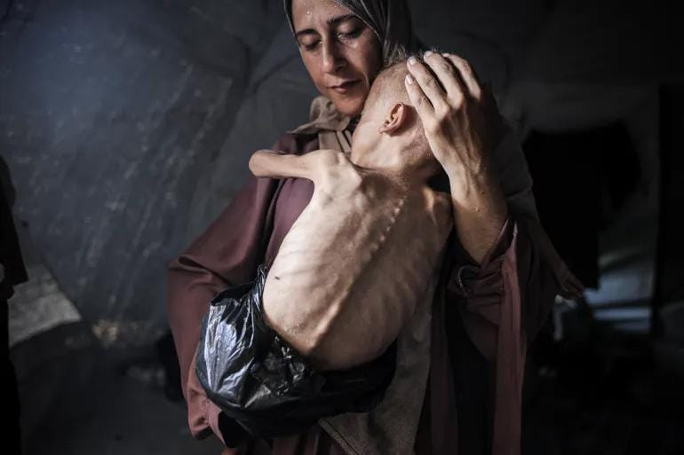

世界苦茶07月25日新闻 | 36条 | 泰国与柬埔寨再进行边境交火

泰国与柬埔寨再进行边境交火 | 中欧领导人会谈在北京进行 | 泽连斯基公布针对反腐局的新法案 | 俄罗斯飞机失事49人遇难 | 加沙地区人道主义危机加剧
今日三条新闻分析
苦茶数据
美元兑人民币：7.15（昨日7.14，前日7.16）
美元兑日元：147.42（昨日146.07，前日146.78）
上证指数：3595（昨日3598，前日3608）
标普500指数：6363（昨日6358，前日6309）
比特币：117216（昨日119276，前日118896）
布伦特原油：69.53（昨日68.80，前日68.83）
中国新闻
• 广西矿难三人遇难 ：中国广西省一处矿山发生塌方，造成三人遇难。中国央视新闻星期四引述广西相关部门消息报道，贺州市八步区南乡镇张公岭矿区内发生坍塌，五人被困。经当地救援，两人已获救。另外三人也被救出，但已无生命体征。2019年10月，广西南丹庆达惜缘矿业投资有限公司大坪矿区发生事故，造成两人死亡、11人失联。
• 中方回应泰柬冲突 ：泰国和柬埔寨爆发边境冲突，中国外交部回应时说，对当前事态发展深感担忧，并呼吁双方通过对话协商妥善解决问题。中国外交部发言人郭嘉昆星期四在例行记者会上说，泰国和柬埔寨两国都是中国的友好邻邦，也是亚细安重要成员，睦邻友好，妥处分歧，符合双方根本和长远利益。郭嘉昆也说，从地区国家的共同利益和诉求出发，中国秉持公正公允立场，已经并将继续以自己的方式做劝和促谈的工作，为推动缓局降温发挥建设性作用。
• 东北大学生实习溺亡细节 ：中国内蒙古发生东北大学学生参观学习中意外坠落溺亡事故。中金黄金告诉中国媒体，涉事矿厂已停产。学校知情人星期三告诉中国红星新闻，遇难者是资源与土木工程学院矿物加工工程专业的学生，这是由学校组织的实习，要求这个专业大三升大四约五六十名同学全员参与，与毕业要求挂钩。这起事故发生在星期三，地点为中国黄金集团内蒙古矿业有限公司乌努格吐山铜钼矿选矿厂。
• 电动自行车新国标实施 ：中国四部门联合发布意见，9月1日起实施电动自行车新国标。据“工信微报”微信公众号消息，中国工业和信息化部、公安部、市场监管总局、国家消防救援局等四部门联合印发《关于强化电动自行车强制性国家标准实施 加快新产品供应的意见》。《意见》从严格电动自行车生产管理、认证管理、销售监督、登记管理、老旧车辆更新换代、消费者权益保护、长效机制建设等七方面作出部署，推动电动自行车全产业链各环节按照新标准要求调整和适配，加快形成适应新标准要求的产业生态和监管模式。
• 新华社称中欧是伙伴 ：中国—欧盟领导人会晤星期四登场前，中国官媒新华社发表英文评论文章，强调中国是欧洲的重要伙伴。新华社在评论文章称，今年是中国和欧盟建交50周年。随着国际形势日益紧张，“建交50周年及时发出提醒：中国是欧洲的重要伙伴，而不是系统性竞争对手”。文章称，尽管偶尔存在分歧，贸易、气候和全球治理等多方面共同利益，是支撑中欧关系的基础。这些共同点不应被孤立摩擦点掩盖。
• 中印举行边境磋商会议 ：中印举行边境事务磋商和协调工作机制第34次会议，两国外交、国防、移民等部门代表参加。据“边海纵横”微信公众号消息，中国外交部边界和海洋事务司司长洪亮同印度外交部东亚司联秘戴国澜星期三在印度新德里共同主持会议。根据两国领导人共识精神，双方重点就落实中印边界问题特别代表第23次会晤成果深入沟通，同意共同筹备好特代第24次会晤。
• 习近平呼吁中欧互信 ：中国国家主席习近平与到访的欧洲领导人会面时说，国际形势越是严峻复杂，中欧越要增进互信。他形容，中欧都是国际社会中的“大个子”，要牢牢把握中欧关系发展的正确方向。中国央视新闻报道，习近平星期四上午在北京人民大会堂，会见赴华举行中国—欧盟领导人会晤的欧洲理事会主席科斯塔和欧盟委员会主席冯德莱恩。习近平说，中欧关系站在一个关键历史节点。中欧建交50年来交流合作成果丰硕，其中的重要经验和启示就是相互尊重、求同存异、开放合作、互利共赢。这也是中欧关系未来发展应该坚持的重要原则和努力方向。
• 自动驾驶发布伦理指引 ：中国发布《驾驶自动化技术研发伦理指引》，强调在面对不可避免的交通事故或极端行车环境时，应确保驾驶自动化系统能高度尊重生命。据中国央视新闻报道，中国科技部官网星期三公布这份指引，意在防范技术研发与产品应用过程中的科技伦理风险，推动该领域健康发展。指引强调，在面对不可避免的交通事故或极端行车环境时，应确保驾驶自动化系统能高度尊重生命，积极寻求有效应对方法最大限度降低对人的伤害；与驾驶自动化技术相关的算法、模型等内容应当被清晰记录、随时可查。
• 美批中国禁员工离境 ：美国商务部长卢特尼克批评，中国政府禁止该部一名美籍华裔雇员离境的做法令人发指，并称特朗普政府正努力解决这个问题。卢特尼克星期三在华盛顿接受彭博电视访问时说：“这名雇员回家，然后被捕。他们还没收了他的护照。我向国务院交待了情况，由他们处理。但这简直是令人发指的做法。”美国国务院星期二说，这个不具名的美国专利商标局雇员以个人身份到访中国，之后被禁止离境。
亚太印太新闻
• 泰柬再交火争议未解 ：柬埔寨和泰国双方说，两国军队星期四在争议边境地区再次交火。泰国指柬埔寨的行动造成平民死伤，出动F-16战斗机空袭柬埔寨两处军事目标。泰国地区官员告诉路透社，柬埔寨方面发射炮弹，造成至少两名泰国平民死亡，另有两人受伤。法新社报道，柬埔寨国防部和泰国军队均指责对方在此次事件中首先开火，这是双方因两座古庙附近边界划界问题长期争执的最新一次冲突。
• 泰柬冲突已致14死46伤 ：泰国当局称，该国和柬埔寨的冲突已造成至少14人死亡、46人受伤。内政部已下令疏散距离边境50公里的民众。柬埔寨尚未报告该国伤亡情况。泰国外交部表示，泰国准备在柬埔寨入侵的情况下加强自卫措施。柬埔寨国防部也表示，当前最重要的目的是自卫，袭击重点是军事区域。
• 泰看守首相谴责柬方 ：泰国遭停职首相佩通坦谴责柬埔寨在泰国边境挑起暴力活动，并表示全力支持在国际法律框架内采取的所有政府、军事和外交报复措施。《曼谷邮报》报道，佩通坦星期四下午在社媒平台X发文说，柬埔寨违反国际法和人权原则，率先向泰国领土发动远程攻击，对官员以及无辜平民造成影响，“我谴责柬埔寨在泰国边境使用暴力和侵略行为。”泰柬军队5月底在边境主权争议地区短暂交火，导致柬军一人死亡，两国关系随后陷入紧张。佩通坦早前与柬埔寨前首相洪森通电话，但录音内容遭外泄，引起泰国政界不满。
• 缅甸军夺回金矿镇 ：缅甸军方说，经过长达一年的战斗，军队已夺回矿业重镇德贝金。法新社报道，缅甸军政府星期四宣布，重新占领位于第二大人口城市曼德勒以北约100公里的德贝金镇。德贝金镇坐落在伊洛瓦底江畔，是一个利润丰厚的金矿开采地。缅甸官媒《缅甸环球新光报》说，反军方联盟去年8月以压倒性的优势进攻德贝金镇，但经过17次重大战役，军方已夺回这个镇的控制权。
• 韩美“2+2”会议延期 ：由于美国财政部长斯科特·贝森特的日程安排有变，韩国与美国在华盛顿举行的“2+2”经贸磋商推迟举行。路透社引述韩国财政部星期四发布的消息说，因美国财长贝森特临时有事，韩美“2+2”磋商无法如期在星期五举行。双方将尽快重新安排贝森特与韩国企划财政部长官具润哲以及两国高级贸易特使的会晤。具润哲星期四飞往华盛顿，参加星期五的会议，希望能够达成一项协议，使亚洲第四大经济体韩国免受特朗普将于8月1日生效的25%惩罚性关税的影响。
科技新闻
• 李强将出席AI大会 ：中国总理李强将在星期六出席在上海举行的世界人工智能大会。中国外交部星期四在官网宣布，李强将于7月26日出席在上海举行的2025世界人工智能大会暨人工智能全球治理高级别会议开幕式并致辞。中国外交部发言人郭嘉昆也在同日举行的外交部例行记者会上，介绍会议相关安排以及中国期待时说，中方已邀请来自40余个国家和国际组织的高级别代表出席。
• GPT-5或八月发布 ：在OpenAI CEO奥尔特曼不断强调“GPT-5即将发布”的背景下，消息人士称，OpenAI正准备在八月发布新版本旗舰大模型，如果顺利的话发布节点最早会在八月初。奥尔特曼今年早些时候曾说，GPT-5的显著变化是集成GPT系列和推理模型o系列，用户不再需要根据任务类型选择适配的AI模型。下个月发布GPT-5时，还会一并推出mini和nano版本。本月早些时候，OpenAI就推迟了一个开放权重模型的发布，官方给出的理由是需要“进行额外安全测试并审查高风险领域”。这款“开放模型”仍将赶在GPT-5前在7月底发布。知情人士称其“类似于o3 mini”，同样具备推理能力。
• 苏姿丰称美厂晶片贵 ：美国超威半导体公司首席执行官苏姿丰说，台积电美国亚利桑那州工厂生产的晶片成本价，要比台湾总部供应的高。苏姿丰星期三在华盛顿出席一场人工智能相关的活动时说，与台湾总部生产的晶片相比，台积电亚利桑那工厂生产的晶片成本价要高出5%至20%。公司预计今年底前从台积电亚利桑那工厂获取第一批晶片。苏姿丰在活动后接受彭博电视采访时指出，由于AMD正致力于确保关键晶片供应链的多元化，较高的成本是值得的。她说，“我们必须考虑到供应链的韧性。这是冠病疫情给予我们的教训”。
财经新闻
• 日本将助美国车对日出口并推进日本车返销： 日本政府已着手探讨要求日本车商推进把在美国生产的汽车返销日本的反向出口。此外还将协调利用日本车商的国内销售网络，以支持美国车商的对日出口。政府希望此举有助于削减美国对日本的贸易逆差。美国是日本车商最重要的市场之一，2024年日本对美出口 135万辆乘用车。另一方面，美国每年对日出口仅两万辆左右，因此日本政府将协助增加美国的出口。作为回报，美国政府对日本汽车加征的关税从25%减半，加上2.5%的基本税率，合计为15%。尽管如此，日本市场能否接受美国车尚是未知数。
• 欧盟拟对美征关税 ：欧盟委员会说，与美国通过谈判达成贸易解决方案指日可待。与此同时，欧盟成员国批准对美商品反制清单。路透社报道，欧盟委员会发言人星期四就欧美关税谈判问题告诉记者：“我们的重点是与美国取得谈判结果……我们相信，这样的结果可以实现。”欧盟成员国同日投票批准对930亿美元美国商品征收关税，以在谈判破裂的情况下，对美国实施反制措施。
• 印英签署自由贸易协定 ：印度与英国正式签署自由贸易协定，降低从纺织品到威士忌和汽车等商品的关税，并扩大对两国企业的市场准入。路透社报道，印度总理莫迪星期四与英国首相斯塔默签署这项自由贸易协定，计划到2040年将双边贸易额再增加255亿英镑。这是英国2020年脱离欧盟以来，签署的最大贸易协定。对印度来说，这标志着它与发达经济体建立的最大战略伙伴关系，可以为新德里与欧盟达成长期协议，以及与其他地区的谈判提供模板。
• 马国谋减美关税 ：马来西亚寻求将美国特朗普政府拟定对马国的关税税率，降低到20%以下。彭博社报道，马国投资、贸易和工业部长扎夫鲁星期四说，马国目前的谈判方向是尽可能降低关税，并且认为可以与美方谈成一个对双方都公平的数字。他也表明，马国还没有准备好结束与美国的谈判，双方仍在敲定细节。马国首相安华会在代表团完成谈判后，与美国总统特朗普会谈。
• 越南忧美关税冲击出口 ：越南政府内部评估显示，如果美国总统特朗普宣布的关税措施生效，估计越南对美国的出口可能下降多达三分之一。据彭博新闻社看到的一份为越南总理范明政的顾问委员会准备的文件显示，20%至40%的关税税率将使出口收入至多下降370亿美元，并将冲击越南大多数关键产业，包括电子、机械、服装、鞋类和家具。一名知情人士称，这一数据假设越南企业将承担全部关税成本，并补充说，进口商可能将需要承担一部分。
• 奇瑞将助印企造电车 ：知情人士称，中国车企奇瑞将提供技术和零部件，协助印度亿万富豪萨詹·金达尔创办的JSW集团在2027年开创电动车品牌。彭博社星期四引述知情人士报道，根据两家公司签订的协议，金达尔集团将一次性支付一笔技术转让费与常规特许权使用费。依据印度对中方在战略领域投资的限制，双方没有任何股权安排。这是中印2020年爆发边境冲突、使两国关系陷入低谷以来，中国汽车制造商首次向印度公司转让技术。印度政府极力遏制中国在境内进行大型投资。
• 海南自贸港将封关 ：经过七年建设，海南自由贸易港将在今年12月正式启动全岛“封关”，届时海南岛内进口零关税商品比率将大幅提升，范围也将进一步扩大。中国国家发展和改革委员会等四部门、海南省“一二把手”，星期三在发布会上介绍海南自贸港建设情况。国家发改委副主任王昌林宣布，经中共中央批准，海南自贸港封关将在今年12月18日正式启动。“封关”是一个海关术语，即海南全岛成为一个“境内关外”区域，岛内可享受零关税等优惠政策。
• 魏建军与贾跃亭合作，长城汽车出海美国： 7月17日，FF第二品牌FX的首款车型FX Super One，系获得魏牌高山合作授权的车型。截至发布会结束，FX Super One的付费预订量超过1万，达到10034台。长城汽车是贾跃亭提出的“中美汽车产业桥梁战略”的四家中国合作车企之一，亦是落地该战略的第一家车企。面对壁垒高筑的美国市场，魏建军选择与贾跃亭联手合作，依托于贾跃亭创办的美国汽车公司FF，推动长城汽车曲线进入美国市场。在FF官网，FX Super One 产品介绍页上一度出现“高山9全系标配智能电四驱系统”等内容，这并非偶然，亦非抄袭，而是长城汽车与FF暗度陈仓的合作。
俄乌战争
• 泽连斯基7月24日宣布将向最高拉达提交一份“充分平衡”的新法律草案文本，打击俄渗透的同时确保国家反腐败局和特别反腐败检察院的独立性： 他同时表示保持团结和独立很重要，尊重所有乌克兰人的立场。国家反腐败局和特别反腐败检察院对新法案表示欢迎，他们协助起草了新法案，称该法案恢复了他们所有的程序权力并保证了其独立性。目前尚不清楚新法案何时会在最高拉达投票。抗议活动可能会持续到新法案通过为止。在24日晚上的抗议活动中，人数较前几日有所减少。
• 中国对俄发动机绕制裁 ：为规避西方制裁，中国制造的发动机以冷却装置的名义输入俄罗斯。路透社星期三引述三名欧洲安全官员和所查阅的文件称，中国制造的发动机以“工业制冷装置”的标签，通过幌子公司秘密地运送给俄罗斯国有无人机制造商，以规避西方制裁。根据上述官员以及包括合约、发票和海关文书在内等文件，虽然美国和欧盟去年10月实施的制裁，旨在扰乱俄罗斯武器制造商IEMZ Kupol的供应链，但中国输俄发动机，让IEMZ Kupol得以增加Garpiya-A1攻击型无人机的产量。
• 星链断网影响乌军使用 ：自美东时间周四下午3:30左右起，星链用户报告称无法连接到太空探索技术公司的卫星互联网服务。星链官网首先通过一条横幅信息确认了该问题，称星链目前正在经历服务中断。我们的团队正在调查。星链在 X 平台上于美东时间下午4:05发布了一条更详细的信息，称「星链目前处于网络中断状态，我们正在积极实施解决方案。我们感谢您的耐心，一旦此问题解决，我们将分享更新。」据基辅独立报报道，此次中断也影响到依赖星链终端的乌克兰部队，援引军方Telegram消息称星链在整个前线均处于中断状态。
• 安-24二次降落时失联 ：俄罗斯失联的安-24客机7月24日坠毁，机上49人全部遇难。客机在滕达机场首次降落失败，第二次尝试降落绕圈飞行时失联。失联客机坠毁在距离滕达市15公里的山坡上。目前事故原因仍在调查，技术故障和机组人员操作失误是可能的原因。该飞机已有近50年机龄，适航证书在2021年被延长至2036年。航空公司表示，飞机在飞行前接受了必要的检查。
国际新闻
• 美国联邦第九巡回上诉法院7月23日以2比1的投票结果裁定，特朗普限制“出生公民权”的行政令违宪，维持了下级法院对该行政令在全国范围内的禁令： 均由克林顿任命的两名法官认为，地区法院正确地判定剥夺许多在美出生者公民身份的行政令违宪，对此完全同意。对于此前最高法院对全国范围内禁令的限制，多数意见认为此案由多州提起诉讼，需要一项全国性命令。此案属于最高法院留下的例外情况之一，地区法院未滥用其自由裁量权。特朗普任命的法官持反对意见认为，各州没有起诉的合法权利或地位，应以善意的怀疑态度对待任何普遍救济的请求。但他并未就限制“出生公民权”是否违宪发表意见。
• 联合国国际法院7月23日在咨询意见中表示，如果各国未能采取措施保护地球免受气候变化的影响，则可能违反国际法，受其影响的国家可能有权获得赔偿： 这项不具约束力的意见得到了法院15名法官的一致支持，被誉为国际气候法的转折点。
• 伊朗将接待国际原能机构 ：伊朗已同意接待国际原子能机构的一个技术代表团，代表团将在两三周内访问伊朗，讨论原子能机构与伊朗之间的合作。伊朗外交部副部长卡泽姆·加里布阿巴迪星期三在纽约联合国总部举行的记者会上说：“代表团将前往伊朗讨论核协议的达成方式，而不是前往核设施。”新华社引述他说，如果伊朗和美国举行新一轮谈判，谈判将以间接形式进行。
• 哈马斯与美停火谈判分歧 ：美国中东问题特使威特科夫7月24日指责哈马斯“自私”，称哈马斯的最新回应表明其缺乏停火意愿。美国将打断停火谈判，从卡塔尔召回谈判团队，以讨论下一步行动。威特科夫还称，正在考虑让被扣人质获释的“替代选项”，但他和美国国务院未透露细节。国务院也未明确回应美国是否以及如何继续寻求加沙停战。哈马斯25日称，在与各方广泛磋商后已经给出了最终答案，积极处理了收到的所有意见。这践行了对斡旋方的努力和“建设性处理”所提出倡议的“真正承诺”。哈马斯对威特科夫的“负面言论”感到惊讶，表示该组织在谈判中表现出了责任感和灵活性。哈马斯“渴望达成一项协议，结束对加沙侵略和我们人民的苦难”。法国总统马克龙24日表示，法国将承认巴勒斯坦为一个国家，他将在9月的联合国大会上正式确定该决定。目前的当务之急是加沙停战和拯救平民。以色列总理内塔尼亚胡谴责马克龙的决定，称该行为是奖励恐怖，并可能产生另一个伊朗代理人，成为消灭以色列的发射台。巴勒斯坦权力机构对马克龙的决定表示欢迎。
• 加沙饥荒加剧人道危机 ：加沙大规模饥饿持续加剧。世卫组织总干事谭德塞警告称，随着营养不良导致的死亡人数激增，加沙有超过200万人面临饥饿。半岛电视台记者表示，加沙因饥饿造成的死亡人数正以“惊人的速度”增加。包括儿童和老人在内的各个年龄段的人都因营养不良而被送往医院。加沙当局表示，该地区“每周急需至少50万袋面粉，以避免人道主义状况全面崩溃”。近东救济工程处称，该机构在约旦和埃及有6000辆满载人道主义物资的卡车，随时准备进入加沙。负责人敦促以色列允许人道主义不受限不间断进入加沙。美联社、路透社、法新社和BBC发表联合声明称，他们在加沙的记者正面临饥饿威胁。呼吁以色列允许记者进出加沙，并允许足够的食品供应进入加沙。哈马斯7月24日证实向以色列发送了最新的停火提议。一名以色列官员称提议“可行”，但未提供细节。以总理办公室召回停火谈判代表进行“磋商”。
• 以士兵遭汽车袭击 ：以色列中部城市发生汽车冲撞事件，造成八名士兵受伤，警方将案件定性为恐怖袭击。法新社报道，以色列军方星期四发布声明说，一名司机当天在中部城市卡法尔约纳附近的一个道路交叉口，故意开车撞向一处公交车站，导致八名士兵受伤，其中两人伤情中等，六人受轻伤。目击者说，这名司机在卡法尔约纳附近突然闯进她所在的车道，然后以最快速度右打方向盘，全力冲向车站并撞击人群。
• 法国宣布承认巴国 ：法国总统马克龙宣布，法国将于9月的联合国会议上正式承认巴勒斯坦国。他是宣布此举的最大欧洲强国。马克龙星期四在社交平台X及Instagram写道：“我已决定法国将承认巴勒斯坦国，信守对中东公正及持久和平的历史性承诺。我将在9月联合国大会上正式宣布。”据法新社统计，尽管以色列和美国强烈反对，目前至少有142个国家承认或计划承认巴勒斯坦国地位。
• 科尔宾宣布组建新党 ：英国政坛持续分裂，前工党领袖科尔宾宣布，他计划与另一名前英国执政党成员共同组建新政党。法新社报道，科尔宾星期四与国会独立议员苏丹纳发布联合声明，宣布组建左翼政党“你的党”。两人表明：“现在是时候建立一个新政党了，一个扎根于我们的社区、工会和社会运动的政党。”
• 哥大与美政府达成和解 ：美国哥伦比亚大学与特朗普政府达成2亿2100万美元的和解协议，以了结多项民权调查。这为恢复政府对大学数以百万美元计的联邦研究资金铺平了道路，化解了数月来动摇了这所常春藤盟校财务状况和管理层的僵局。一名白宫高层官员星期三说，协议包含因涉嫌歧视性行为而处以的2亿美元民事罚款，以及另与美国平等就业机会委员会就2023年10月哈马斯与以色列冲突爆发后，犹太教职员工面临工作场所歧视的指控达成的2100万美元和解协议。这名官员将后者描述为近二十年来最大的公共就业歧视和解案，也是与反犹主义或任何有宗教信仰员工相关的最大和解案。